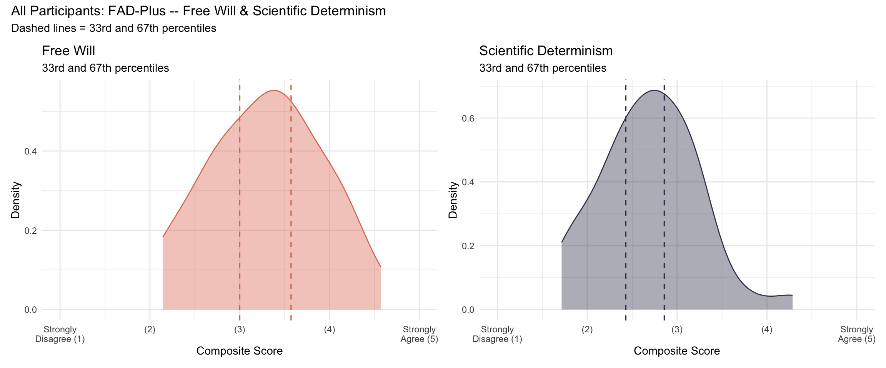
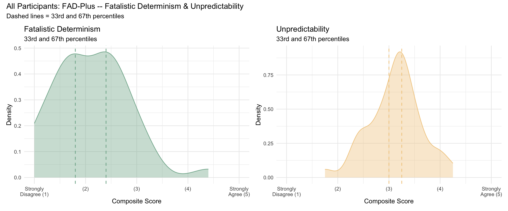
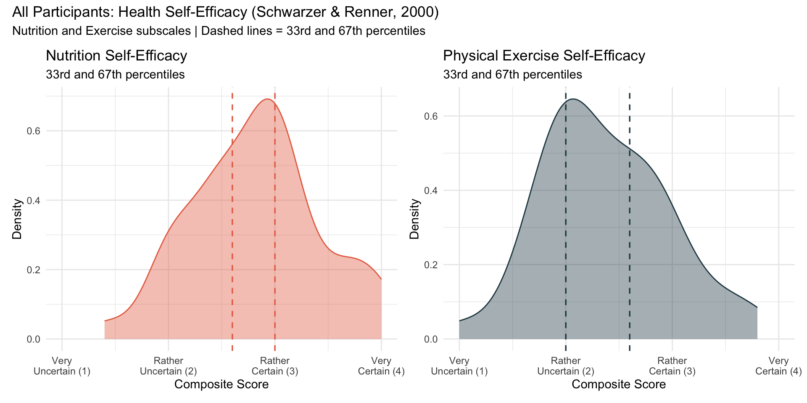
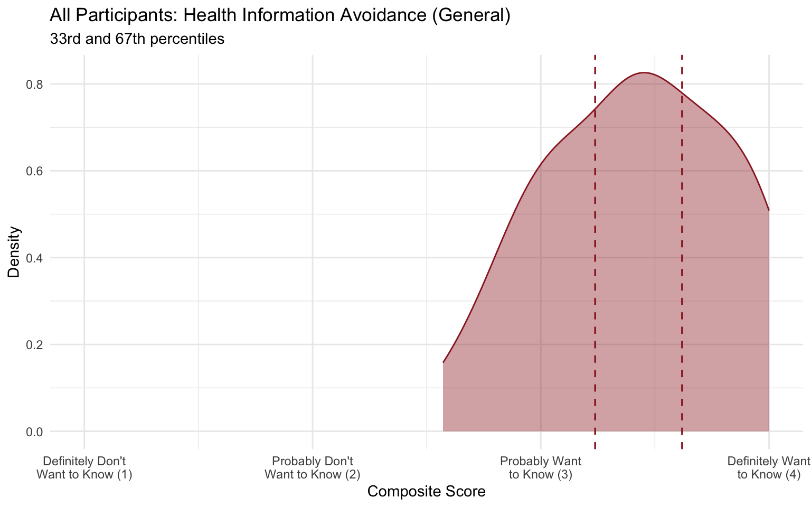
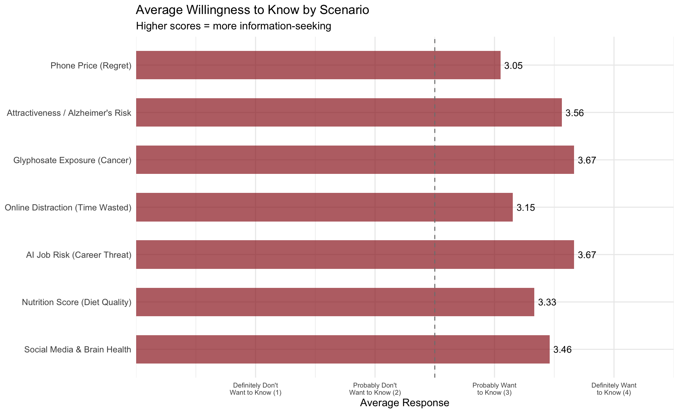

| Password | Free Will | FW(%) | Sci Det | SD(%) |
|---|---|---|---|---|
| $iorrZZ2425! | 2.86 | 26% (low) | 2.57 | 36% (mid) |
| '@Auliebear224757328el | 3.57 | 64% (mid) | 2.71 | 46% (mid) |
| 5121lyster | 2.71 | 15% (low) | 2.57 | 36% (mid) |
| 78fArO50r | 2.71 | 15% (low) | 1.71 | 0% (low) |
| Arlingtonfootball(333) | 3.57 | 64% (mid) | 1.71 | 0% (low) |
| Benny2013 | 3.29 | 44% (mid) | 2.29 | 15% (low) |
| Binghamton1234 | 3.00 | 31% (low) | 2.00 | 10% (low) |
| Birth2005 | 3.86 | 79% (high) | 2.86 | 59% (mid) |
| Biscuit1227 | 3.43 | 54% (mid) | 3.14 | 77% (high) |
| Bxqc3216 | 3.14 | 38% (mid) | 2.57 | 36% (mid) |
| Damilola1976 | 3.71 | 72% (high) | 2.43 | 31% (low) |
| December1912 | 2.14 | 0% (low) | 3.71 | 97% (high) |
| Eski3754 | 2.43 | 8% (low) | 2.29 | 15% (low) |
| Funkita732 | 3.14 | 38% (mid) | 3.29 | 87% (high) |
| Goodwin7292()! | 4.14 | 87% (high) | 3.14 | 77% (high) |
| Health$402 | 3.43 | 54% (mid) | 2.86 | 59% (mid) |
| Health1203 | 3.71 | 72% (high) | 3.29 | 87% (high) |
| Littlekitty1019 | 2.14 | 0% (low) | 2.71 | 46% (mid) |
| LongSurvey1234 | 4.29 | 97% (high) | 3.29 | 87% (high) |
| Power2 | 3.43 | 54% (mid) | 2.00 | 10% (low) |
| Rcool1229 | 2.57 | 13% (low) | 2.71 | 46% (mid) |
| Strawberryhamburger3 | 4.00 | 85% (high) | 2.29 | 15% (low) |
| Tinawatsonqwe1 | 3.86 | 79% (high) | 3.00 | 69% (high) |
| VT1107lyn!Bing | 3.00 | 31% (low) | 3.00 | 69% (high) |
| biotinISneeded2313! | 3.29 | 44% (mid) | 2.29 | 15% (low) |
| brita6767 | 4.14 | 87% (high) | 4.29 | 100% (high) |
| earth5567 | 4.57 | 100% (high) | 3.29 | 87% (high) |
| ha1rcut | 3.43 | 54% (mid) | 3.14 | 77% (high) |
| health0925 | 2.86 | 26% (low) | 2.71 | 46% (mid) |
| health1244 | 4.14 | 87% (high) | 2.29 | 15% (low) |
| health1248 | 3.29 | 44% (mid) | 2.43 | 31% (low) |
| health4103 | 3.57 | 64% (mid) | 2.86 | 59% (mid) |
| jelly1909 | 3.00 | 31% (low) | 1.86 | 5% (low) |
| kyunkyun3890 | 2.14 | 0% (low) | 2.71 | 46% (mid) |
| schre0000 | 3.71 | 72% (high) | 3.00 | 69% (high) |
| surv1901 | 3.29 | 44% (mid) | 2.29 | 15% (low) |
| vidyaravi1 | 2.71 | 15% (low) | 1.86 | 5% (low) |
| water6331 | 2.43 | 8% (low) | 2.86 | 59% (mid) |
| water9813 | 4.14 | 87% (high) | 2.57 | 36% (mid) |
| witch2026 | 2.71 | 15% (low) | 3.14 | 77% (high) |
5 Psychological Beliefs
This chapter explores five measures of psychological beliefs that shape how people think about control, agency, self-efficacy, and information seeking. These beliefs are critical for health communication because they influence whether audiences feel empowered to change their behavior, whether they seek or avoid health information, and what types of behavior change strategies are most effective.
ImportantPH 322 — Week 5: Behavioral Theory & Methods
This week applies behavior change theory to health communication. Your scores on free will beliefs, self-efficacy, and information avoidance help you understand how these psychological factors influence receptivity to health messages and the design of behavior change interventions.
5.1 Free Will & Determinism (FAD-Plus)
Constructs
The FAD-Plus (Paulhus & Carey, 2011) measures lay beliefs about free will and determinism across four subscales:
- Free Will: Belief that people have complete control over their decisions and are responsible for their actions
- Scientific Determinism: Belief that biology, genetics, environment, and science determine behavior
- Fatalistic Determinism: Belief that fate, destiny, and mysterious forces control life outcomes
- Unpredictability: Belief that life is random, unpredictable, and governed by chance
Measures
The FAD-Plus contains 27 items across four subscales (Free Will: 7 items; Scientific Determinism: 7 items; Fatalistic Determinism: 5 items; Unpredictability: 8 items) rated on a 5-point scale: 1 = Strongly Disagree, 5 = Strongly Agree. Higher scores indicate stronger endorsement of that belief.
Example items:
- Free Will: “People have complete control over the decisions they make.”
- Scientific Determinism: “People’s biological makeup determines their talents and personality.”
- Fatalistic Determinism: “I believe that the future has already been determined by fate.”
- Unpredictability: “Chance events seem to be the major cause of human history.”
Your Scores
| Password | Fat Det | FD(%) | Unpred | UP(%) |
|---|---|---|---|---|
| $iorrZZ2425! | 2.40 | 59% (mid) | 3.62 | 85% (high) |
| '@Auliebear224757328el | 2.20 | 49% (mid) | 2.88 | 26% (low) |
| 5121lyster | 2.60 | 72% (high) | 3.88 | 92% (high) |
| 78fArO50r | 2.20 | 49% (mid) | 3.25 | 54% (mid) |
| Arlingtonfootball(333) | 1.40 | 13% (low) | 3.38 | 69% (high) |
| Benny2013 | 1.80 | 33% (low) | 2.25 | 3% (low) |
| Binghamton1234 | 4.40 | 100% (high) | 3.00 | 33% (low) |
| Birth2005 | 1.60 | 18% (low) | 2.50 | 10% (low) |
| Biscuit1227 | 2.40 | 59% (mid) | 2.50 | 10% (low) |
| Bxqc3216 | 2.60 | 72% (high) | 3.25 | 54% (mid) |
| Damilola1976 | 1.75 | 31% (low) | 3.25 | 54% (mid) |
| December1912 | 1.60 | 18% (low) | 2.38 | 5% (low) |
| Eski3754 | 1.20 | 8% (low) | 3.12 | 38% (mid) |
| Funkita732 | 2.60 | 72% (high) | 2.75 | 18% (low) |
| Goodwin7292()! | 1.80 | 33% (low) | 3.50 | 79% (high) |
| Health$402 | 1.00 | 0% (low) | 1.75 | 0% (low) |
| Health1203 | 1.80 | 33% (low) | 3.12 | 38% (mid) |
| Littlekitty1019 | 2.40 | 59% (mid) | 3.38 | 69% (high) |
| LongSurvey1234 | 2.60 | 72% (high) | 3.12 | 38% (mid) |
| Power2 | 1.80 | 33% (low) | 2.75 | 18% (low) |
| Rcool1229 | 1.00 | 0% (low) | 3.38 | 69% (high) |
| Strawberryhamburger3 | 1.80 | 33% (low) | 4.00 | 95% (high) |
| Tinawatsonqwe1 | 3.00 | 90% (high) | 3.25 | 54% (mid) |
| VT1107lyn!Bing | 3.00 | 90% (high) | 2.88 | 26% (low) |
| biotinISneeded2313! | 1.00 | 0% (low) | 3.25 | 54% (mid) |
| brita6767 | 2.40 | 59% (mid) | 3.00 | 33% (low) |
| earth5567 | 2.20 | 49% (mid) | 3.12 | 38% (mid) |
| ha1rcut | 1.40 | 13% (low) | 3.12 | 38% (mid) |
| health0925 | 2.00 | 46% (mid) | 2.50 | 10% (low) |
| health1244 | 2.20 | 49% (mid) | 3.12 | 38% (mid) |
| health1248 | 2.40 | 59% (mid) | 3.62 | 85% (high) |
| health4103 | 2.80 | 85% (high) | 3.50 | 79% (high) |
| jelly1909 | 2.60 | 72% (high) | 4.00 | 95% (high) |
| kyunkyun3890 | 1.60 | 18% (low) | 2.38 | 5% (low) |
| schre0000 | 1.20 | 8% (low) | 2.88 | 26% (low) |
| surv1901 | 3.20 | 95% (high) | 2.75 | 18% (low) |
| vidyaravi1 | 2.80 | 85% (high) | 3.62 | 85% (high) |
| water6331 | 1.60 | 18% (low) | 3.25 | 54% (mid) |
| water9813 | 3.20 | 95% (high) | 4.25 | 100% (high) |
| witch2026 | 1.60 | 18% (low) | 3.38 | 69% (high) |
Class Distribution


5.2 Health Self-Efficacy
Constructs
The Health Self-Efficacy Scales (Schwarzer & Renner, 2000) measure your confidence in maintaining healthy behaviors despite common barriers.
- Nutrition Self-Efficacy: Your confidence in sticking to healthful foods despite barriers such as needing new routines, repeated attempts, rethinking your diet, lack of support, or needing a detailed plan
- Physical Exercise Self-Efficacy: Your confidence in exercising despite barriers such as worries, depression, tension, tiredness, or being busy
Measures
Each subscale contains 5 items rated on a 4-point scale: 1 = Very Uncertain, 2 = Rather Uncertain, 3 = Rather Certain, 4 = Very Certain. Higher scores indicate greater self-efficacy.
Example items:
- Nutrition: “I can manage to stick to healthful foods …even if I need a long time to develop the necessary routines.”
- Exercise: “I can manage to carry out my exercise intentions, …even when I have worries and problems.”
Your Scores
| Password | Nutrition SE | Nutr(%) | Exercise SE | Exer(%) |
|---|---|---|---|---|
| $iorrZZ2425! | 3.0 | 53% (mid) | 1.8 | 11% (low) |
| '@Auliebear224757328el | 2.8 | 42% (mid) | 2.4 | 50% (mid) |
| 5121lyster | 2.0 | 3% (low) | 3.0 | 84% (high) |
| 78fArO50r | 3.8 | 92% (high) | 1.6 | 3% (low) |
| Arlingtonfootball(333) | 3.0 | 53% (mid) | 3.2 | 92% (high) |
| Benny2013 | 3.0 | 53% (mid) | 2.4 | 50% (mid) |
| Binghamton1234 | 3.2 | 76% (high) | 2.0 | 18% (low) |
| Birth2005 | 3.0 | 53% (mid) | 2.0 | 18% (low) |
| Biscuit1227 | 3.0 | 53% (mid) | 2.8 | 71% (high) |
| Bxqc3216 | 3.6 | 87% (high) | 1.6 | 3% (low) |
| Damilola1976 | 3.8 | 92% (high) | 2.8 | 71% (high) |
| December1912 | 2.2 | 16% (low) | 2.0 | 18% (low) |
| Eski3754 | 2.8 | 42% (mid) | 2.4 | 50% (mid) |
| Funkita732 | 2.0 | 3% (low) | 2.0 | 18% (low) |
| Goodwin7292()! | 3.0 | 53% (mid) | 3.8 | 100% (high) |
| Health$402 | 3.4 | 84% (high) | 2.8 | 71% (high) |
| Health1203 | 3.2 | 76% (high) | 2.6 | 63% (mid) |
| Littlekitty1019 | 2.4 | 18% (low) | 2.2 | 42% (mid) |
| LongSurvey1234 | 2.6 | 32% (low) | 1.8 | 11% (low) |
| Power2 | 2.0 | 3% (low) | 2.0 | 18% (low) |
| Rcool1229 | 1.4 | 0% (low) | 2.0 | 18% (low) |
| Strawberryhamburger3 | 2.4 | 18% (low) | 1.8 | 11% (low) |
| Tinawatsonqwe1 | 3.0 | 53% (mid) | 2.0 | 18% (low) |
| VT1107lyn!Bing | 2.4 | 18% (low) | 2.4 | 50% (mid) |
| biotinISneeded2313! | 3.0 | 53% (mid) | 2.2 | 42% (mid) |
| brita6767 | 2.0 | 3% (low) | 2.8 | 71% (high) |
| earth5567 | 4.0 | 97% (high) | 3.6 | 97% (high) |
| ha1rcut | 2.6 | 32% (low) | 2.8 | 71% (high) |
| health0925 | 2.8 | 42% (mid) | 2.2 | 42% (mid) |
| health1244 | 2.0 | 3% (low) | 2.6 | 63% (mid) |
| health1248 | 2.6 | 32% (low) | 2.6 | 63% (mid) |
| health4103 | 3.0 | 53% (mid) | 2.0 | 18% (low) |
| jelly1909 | 3.2 | 76% (high) | 3.0 | 84% (high) |
| kyunkyun3890 | 4.0 | 97% (high) | 2.0 | 18% (low) |
| schre0000 | 3.6 | 87% (high) | 3.4 | 95% (high) |
| surv1901 | 2.4 | 18% (low) | 2.4 | 50% (mid) |
| vidyaravi1 | NaN | NA% (high) | NaN | NA% (high) |
| water6331 | 2.8 | 42% (mid) | 3.0 | 84% (high) |
| water9813 | 2.6 | 32% (low) | 1.6 | 3% (low) |
| witch2026 | 2.4 | 18% (low) | 1.0 | 0% (low) |
Class Distribution

5.3 Health Information Avoidance — General
Constructs
The Health Information Avoidance Scale — General (based on Ho et al., 2021) measures your tendency to seek or avoid potentially threatening information. Information avoidance reflects situations where people choose not to obtain available information, even when it is free and potentially useful.
Measures
The scale presents 7 realistic scenarios and asks whether you would want to know potentially threatening information. Each item is rated on a 4-point scale: 1 = Definitely Don’t Want to Know, 2 = Probably Don’t Want to Know, 3 = Probably Want to Know, 4 = Definitely Want to Know. Higher scores indicate less avoidance (i.e., more information-seeking).
Example item:
- “You bought a phone at what seemed like a reasonable, though not particularly low, price. A month has passed… Do you want to know the price you could have bought it for?”
Your Scores
| Password | Info Seeking | Score(%) |
|---|---|---|
| $iorrZZ2425! | 3.71 | 68% (high) |
| '@Auliebear224757328el | 3.43 | 42% (mid) |
| 5121lyster | 2.71 | 3% (low) |
| 78fArO50r | 3.43 | 42% (mid) |
| Arlingtonfootball(333) | 3.57 | 61% (mid) |
| Benny2013 | 3.86 | 82% (high) |
| Binghamton1234 | 3.14 | 24% (low) |
| Birth2005 | 4.00 | 89% (high) |
| Biscuit1227 | 3.29 | 34% (mid) |
| Bxqc3216 | 3.43 | 42% (mid) |
| Damilola1976 | 4.00 | 89% (high) |
| December1912 | 2.86 | 5% (low) |
| Eski3754 | 3.14 | 24% (low) |
| Funkita732 | 2.86 | 5% (low) |
| Goodwin7292()! | 4.00 | 89% (high) |
| Health$402 | 4.00 | 89% (high) |
| Health1203 | 3.29 | 34% (mid) |
| Littlekitty1019 | 3.43 | 42% (mid) |
| LongSurvey1234 | 3.14 | 24% (low) |
| Power2 | 3.71 | 68% (high) |
| Rcool1229 | 4.00 | 89% (high) |
| Strawberryhamburger3 | 3.00 | 13% (low) |
| Tinawatsonqwe1 | 3.00 | 13% (low) |
| VT1107lyn!Bing | 3.14 | 24% (low) |
| biotinISneeded2313! | 3.43 | 42% (mid) |
| brita6767 | 2.86 | 5% (low) |
| earth5567 | 3.86 | 82% (high) |
| ha1rcut | 3.86 | 82% (high) |
| health0925 | 2.57 | 0% (low) |
| health1244 | 3.00 | 13% (low) |
| health1248 | 3.71 | 68% (high) |
| health4103 | 3.57 | 61% (mid) |
| jelly1909 | 3.57 | 61% (mid) |
| kyunkyun3890 | 3.71 | 68% (high) |
| schre0000 | 3.71 | 68% (high) |
| surv1901 | 3.00 | 13% (low) |
| vidyaravi1 | NaN | NA% (high) |
| water6331 | 3.43 | 42% (mid) |
| water9813 | 3.29 | 34% (mid) |
| witch2026 | 3.43 | 42% (mid) |
Class Distribution

Item-Level Analysis
Each of the 7 scenarios targets a different type of potentially threatening information. The bar chart below shows the average response to each item so you can see which types of information people are most and least willing to learn about.

5.4 Health Information Avoidance — Depression
Constructs
The Health Information Avoidance Scale — Depression measures your tendency to avoid or seek information about a potential depression diagnosis. This scale assesses whether you would prefer to know or not know about your risk for major depression, reflecting the psychological tension between the desire for useful health information and the discomfort of receiving threatening news.
Measures
The scale contains 8 items rated on a 7-point scale: 1 = Strongly Disagree, 2 = Disagree, 3 = Slightly Disagree, 4 = Neutral, 5 = Slightly Agree, 6 = Agree, 7 = Strongly Agree. Items 3, 5, 7, and 8 are reverse-scored so that higher composite scores indicate more avoidance.
Example item:
- “I would rather not know my risk for major depression.”
Your Scores
| Password | Depression Avoidance | Score(%) |
|---|---|---|
| $iorrZZ2425! | 1.50 | 13% (low) |
| '@Auliebear224757328el | 2.12 | 29% (low) |
| 5121lyster | 2.38 | 42% (mid) |
| 78fArO50r | 6.25 | 97% (high) |
| Arlingtonfootball(333) | 2.12 | 29% (low) |
| Benny2013 | 1.75 | 21% (low) |
| Binghamton1234 | 3.12 | 68% (high) |
| Birth2005 | 2.12 | 29% (low) |
| Biscuit1227 | 3.75 | 79% (high) |
| Bxqc3216 | 1.62 | 16% (low) |
| Damilola1976 | 2.50 | 53% (mid) |
| December1912 | 2.38 | 42% (mid) |
| Eski3754 | 1.62 | 16% (low) |
| Funkita732 | 2.38 | 42% (mid) |
| Goodwin7292()! | 3.50 | 76% (high) |
| Health$402 | 6.62 | 100% (high) |
| Health1203 | 1.75 | 21% (low) |
| Littlekitty1019 | 2.62 | 61% (mid) |
| LongSurvey1234 | 1.38 | 8% (low) |
| Power2 | 1.00 | 0% (low) |
| Rcool1229 | 1.00 | 0% (low) |
| Strawberryhamburger3 | 2.38 | 42% (mid) |
| Tinawatsonqwe1 | 4.00 | 84% (high) |
| VT1107lyn!Bing | 2.50 | 53% (mid) |
| biotinISneeded2313! | 1.38 | 8% (low) |
| brita6767 | 4.00 | 84% (high) |
| earth5567 | 1.12 | 5% (low) |
| ha1rcut | 2.12 | 29% (low) |
| health0925 | 3.75 | 79% (high) |
| health1244 | 4.00 | 84% (high) |
| health1248 | 2.88 | 63% (mid) |
| health4103 | 4.00 | 84% (high) |
| jelly1909 | 3.25 | 71% (high) |
| kyunkyun3890 | 1.75 | 21% (low) |
| schre0000 | 4.75 | 95% (high) |
| surv1901 | 3.00 | 66% (mid) |
| vidyaravi1 | NaN | NA% (high) |
| water6331 | 2.50 | 53% (mid) |
| water9813 | 3.38 | 74% (high) |
| witch2026 | 2.12 | 29% (low) |
Class Distribution

Chapter Summary: All Psychological Beliefs Measures

References
Ho, E. H., Hagmann, D., & Loewenstein, G. (2021). Measuring information preferences. Management Science, 67(1), 126–145. https://doi.org/10.1287/mnsc.2019.3554
Paulhus, D. L., & Carey, J. M. (2011). The FAD–Plus: Measuring lay beliefs regarding free will and related constructs. Journal of Personality Assessment, 93(1), 96–104. https://doi.org/10.1080/00223891.2011.536216
Schwarzer, R., & Renner, B. (2000). Social-cognitive predictors of health behavior: Action self-efficacy and coping self-efficacy. Health Psychology, 19(5), 487–495. https://doi.org/10.1037/0278-6133.19.5.487